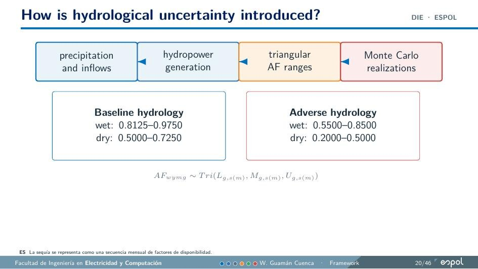

Planificación, operación y transición energética
Mi trabajo combina optimización, modelación de sistemas eléctricos, análisis de datos e ingeniería aplicada. La línea principal es la planificación de largo plazo de sistemas hidrodependientes.
Long-Term Planning of Hydro-Dependent Power Systems
La tesis estudia cómo planificar inversiones de largo plazo en un sistema con alta dependencia hidroeléctrica cuando interactúan la disponibilidad de agua, la operación de embalses, las restricciones de transmisión y las trayectorias de política energética.
PARAMO es el marco desarrollado para este trabajo. Acopla decisiones anuales de inversión con operación mensual y evalúa generación, refuerzo de red, reconductoring, comportamiento de embalses, reservas, emisiones, costo y suficiencia bajo variabilidad hidrológica.


Disponibilidad de agua en la escala de planificación
El componente hidrológico representa secuencias mensuales de disponibilidad en lugar de utilizar un único promedio anual. Esto permite estudiar cuándo se presentan las condiciones secas, cuánto duran y cómo el comportamiento de los embalses afecta costo, flujos de red y suficiencia del suministro.
Expansión, reconductoring y geografía
Varios de mis trabajos estudian alternativas a la expansión convencional de transmisión. He trabajado con reconductoring, repotenciación y reconfiguración, incluyendo el efecto de la geografía andina sobre las decisiones de inversión en la red.

ESPOL, Academia Polaca de Ciencias y HPC
La investigación doctoral se desarrolla en ESPOL-FIEC e incluye colaboración con la División de Economía de la Energía del Mineral and Energy Economy Research Institute de la Academia Polaca de Ciencias. Los recursos computacionales de PLGrid / ACK Cyfronet AGH han apoyado la optimización multiescenario y el postprocesamiento.